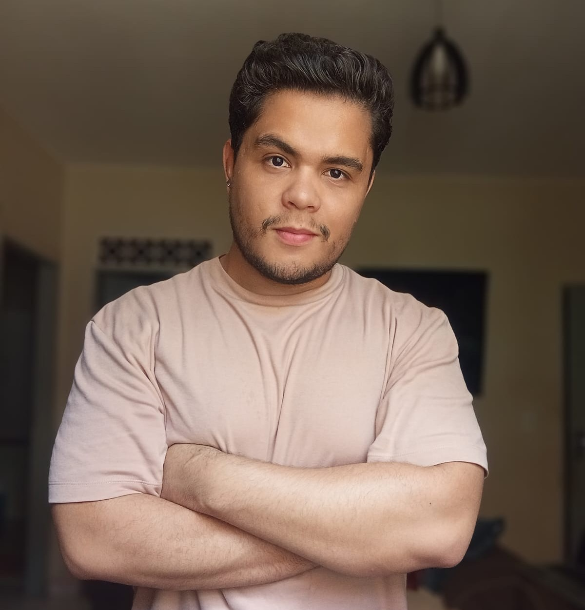
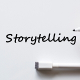
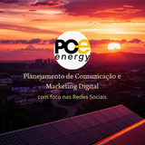
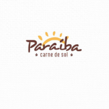

Bem-vindo ao meu mundo criativo!

Publicitário
Entre em contato
Publicitário
Entre em contato
Sempre fui apaixonado por contar histórias e tecnologia. Desde cedo, me senti atraído pela forma como as palavras podem criar experiências, conectar pessoas e transformar realidades. Esse interesse se concretizou na minha trajetória acadêmica e profissional, onde consegui unir minha habilidade criativa com uma curiosidade insaciável pelas novas tecnologias.
Leia mais...Sou um profissional da comunicação com forte atuação em publicidade, marketing digital e mídias sociais, unindo criatividade, estratégia e sensibilidade para desenvolver conteúdos que realmente conectam marcas e pessoas. Tenho experiência sólida na criação de campanhas, produção de conteúdo criativo e multimídia, gestão de redes sociais e planejamento de comunicação, sempre com foco em engajamento, relevância e fortalecimento da identidade de marca. Atuo também como storymaker, com vivência em coberturas full time de eventos, ações promocionais e campanhas institucionais, produzindo conteúdo dinâmico e autêntico em tempo real, especialmente para stories e formatos verticais. Busco capturar a essência do momento e traduzi-la em uma comunicação ágil, envolvente e alinhada à linguagem de cada público e plataforma. Minha atuação é fortemente baseada em copywriting e storytelling, com foco em criar narrativas que ampliam o alcance das marcas, despertam o interesse e geram conexão. Produzo textos, roteiros, peças gráficas e vídeos, além de acompanhar e analisar os resultados das campanhas, interpretando dados para gerar insights e otimizações estratégicas. Estou em constante atualização profissional, estudando novas tendências e buscando aprimoramento contínuo para acompanhar as transformações do mercado. Procuro sempre me aliar às novas tecnologias e ferramentas digitais que otimizam o fluxo de trabalho, aumentam a produtividade e ampliam o impacto das ações de comunicação. Ao longo da minha trajetória, me comprometi com a entrega de soluções criativas, eficazes e alinhadas aos objetivos de cada projeto, atuando com versatilidade, agilidade e uma visão estratégica voltada à inovação e aos resultados.
Ao longo da minha trajetória profissional, desenvolvi competências essenciais para atuar com eficiência em ambientes dinâmicos e colaborativos. Sou **proativo**, antecipando necessidades e sugerindo soluções criativas em projetos e reuniões. Tenho forte **capacidade de colaboração e trabalho em equipe**, construindo relações produtivas e confiáveis com colegas, clientes e gestores.
Sou **resiliente**, lidando de forma positiva com prazos apertados, mudanças e desafios inesperados, mantendo o foco na entrega de resultados. Possuo **boa comunicação**, tanto escrita quanto verbal, permitindo transmitir ideias complexas de maneira clara e engajante. Minha atuação é marcada por **organização, disciplina e atenção aos detalhes**, garantindo qualidade e consistência em todas as entregas.
Além disso, valorizo a **curiosidade e a aprendizagem contínua**, buscando sempre novas formas de aprimorar minhas habilidades e acompanhar as tendências do mercado. Essas soft skills me permitem atuar de forma estratégica, adaptável e colaborativa, contribuindo para projetos inovadores e de alto impacto.
Confira alguns dos meus trabalhos!

Desenvolvi o planejamento de conteúdo completo para o Instagram da Rede Farmanobre durante o mês de agosto de 2025, incluindo criação de posts, copywriting estratégico, escolha de formatos (reels, carrosséis, memes e fotos estáticas) e alinhamento com datas comemorativas... Leia mais...
Ver PlanejamentoDesenvolvi um conjunto de roteiros promocionais para a campanha “Arraiá da Farmanobre”, com o objetivo de atrair o público e reforçar a identidade da marca... Leia mais...
Ver Roteiro
Desenvolvi uma campanha criativa de storytelling para os Stories do Instagram da Farmanobre, com roteiros personalizados para diferentes unidades... Leia mais...
Ver Storytelling
Realizei uma análise estratégica do perfil @redefarmanobreoficial no Instagram utilizando a metodologia SWOT. O diagnóstico apontou pontos fortes, fraquezas, oportunidades e ameaças... Leia mais...
Ver Diagnóstico
A Palestra Dra. Miau surgiu como uma iniciativa voltada à conscientização sobre a importância de oferecer uma despedida respeitosa aos animais de estimação... Leia mais...
Ver Projeto
Desenvolver o planejamento de comunicação e marketing digital da PO Energy foi um processo estratégico e criativo... Leia mais...
Ver ProjetoEste projeto consistiu na criação de um artigo informativo e otimizado para blog com o tema “Atas de Registro de Preços no Governo: Como Funcionam e Quais as Vantagens?”... Leia mais...
Ver Projeto
Atuei como redator responsável pela criação dos textos para as redes sociais do restaurante Paraíba Carne de Sol, com o objetivo de reforçar a identidade nordestina da marca e promover seus eventos, pratos e experiências gastronômicas de forma criativa, leve e envolvente.... Leia mais...
Ver ProjetoGravei, roteirizei e editei todos os vídeos dessa campanha com foco em impacto visual, linguagem estratégica e conexão com o público.
A ideia central foi garantir a presença marcante da marca durante o evento, reforçando a campanha junina com conteúdo dinâmico, divertido e adaptado pra cada unidade.
Mesmo com contextos diferentes, todos os roteiros contam a mesma história: uma experiência envolvente de compra, com ofertas irresistíveis e atmosfera temática, capaz de criar conexão real com o público.
Uma narrativa única, contada de várias formas — sempre com o mesmo objetivo:
❤️🔥 Encantar, atrair e converter.

Clique no botão abaixo para acessar a pasta com todos os vídeos da campanha junina.
🎬 Ver vídeos da campanha
Todos os finais de semana desenvolvi campanhas promocionais de 3 dias, cuidando de todo o processo: roteirização, gravação, edição e publicação.
O objetivo era manter a presença da marca ativa durante todo o período promocional, com forte incentivo à conversão.
Essas campanhas garantiram dinamismo, engajamento e resultados consistentes para a Rede Farmanobre.
Instituição: CENTRO UNIVERSITÁRIO ANHANGUERA PITÁGORAS
Descrição: O curso de Publicidade forma profissionais criativos e estratégicos para o mercado da comunicação. Estou aprendendo a criar campanhas, analisar o mercado, entender o comportamento do consumidor e usar diferentes canais de comunicação para transmitir mensagens eficazes. Focado em estratégias digitais, mídias sociais e marketing de conteúdo.
Vamos trabalhar juntos? Entre em contato comigo.
ogabrielpaes@gmail.com